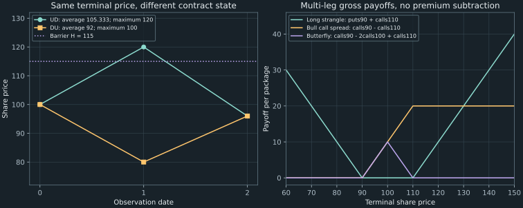

9. Path dependence and option laboratories
A share starts at 100 and moves by factors 1.2 or 0.8 over two periods. Up then down gives the path $(100,120,96)$; down then up gives $(100,80,96)$. Both finish at 96. An option on their arithmetic average, a barrier touched during the path, or their running maximum can nevertheless pay different amounts. A pricing routine receiving only the final price has discarded information it needs.
We build a four-path market small enough to audit completely, then use it to distinguish state representation from the numerical method used to value that state. The paired R and Python laboratories connect this distinction with vector payoffs, multi-leg strategies, dated profit, bond functions, and reusable lattice engines. All examples use declared synthetic inputs; no current option quotations or trading recommendations enter the calculations.
Source spine: recording 25, A Note on Exotic Options, and the week-3 R laboratory, recording 27 and Python laboratory, recording 28. The complete finite-history example, augmented-state proof and exact-rational check, spread solutions, and measure comparison are additions. The companion reuses Chapter 8's public engine and executes every fixture.
9.1 The terminal price can be an insufficient input Recording 25, 1:00
An Asian option may pay on an average of observed underlying prices. The particular fixed-strike arithmetic-average call here pays $(\bar S-K)^+$ with $K=100$ and $\bar S=(S_0+S_1+S_2)/3$. We include time zero and both subsequent observations. A contract averaging only future dates would be a different claim. Arithmetic and geometric averages also define different claims.
A barrier option activates or terminates according to a specified observed price threshold. Our up-and-out call has strike 90 and upper barrier $H=115$. It pays $(S_2-90)^+$ if every observed price $S_0,S_1,S_2$ stays strictly below 115, and pays zero if any observation reaches or exceeds 115. There is no rebate. Monitoring dates, equality at the barrier, and the payment after termination are contractual inputs, not implementation details to guess.
A lookback option uses a path extreme. Our floating-strike lookback put pays $M_2-S_2$, where $M_2=\max(S_0,S_1,S_2)$. It is nonnegative because the terminal observation is included in the maximum. This particular formula should not be confused with every fixed-strike or minimum-based lookback variant.
| Path | Prices at dates 0, 1, 2 | Arithmetic average | Asian call | Up-and-out call | Lookback put |
|---|---|---|---|---|---|
| UU | 100, 120, 144 | 121.333333333 | 21.333333333 | 0 | 0 |
| UD | 100, 120, 96 | 105.333333333 | 5.333333333 | 0 | 24 |
| DU | 100, 80, 96 | 92 | 0 | 6 | 4 |
| DD | 100, 80, 64 | 81.333333333 | 0 | 0 | 36 |
The two middle paths disprove the existence of a single terminal-price function $f(S_2)$ for any of these three claims: it would have to assign two different payoffs to the same argument 96. For example, the first path's average is $316/3$, while the second's is 92. The first touches the barrier through 120; the second never exceeds 100. Their maxima are 120 and 100, producing lookback payments 24 and 4.
All three claims in this example pay only at expiration. They can have European exercise timing while remaining path-dependent. American exercise instead adds a choice of stopping date. The two distinctions are independent. Likewise, “exotic” does not itself prove market incompleteness or mandate a particular numerical technique.
9.2 Preserve the statistic the contract will need Recording 25, 3:22
The ordinary stock node $(i,j)$ records the date and up count. An augmented state adds the information needed to update the contract and determine its eventual payoff. In our fixed-factor market, useful choices are:
| Claim | Additional state | Update after observing $s'$ | Terminal payment |
|---|---|---|---|
| Arithmetic Asian call | $A_i=\sum_{k=0}^i S_k$ | $A_{i+1}=A_i+s'$ | $(A_n/(n+1)-K)^+$ |
| Up-and-out call | $b_i$: all observations so far below $H$ | $b_{i+1}=b_i\land(s'<H)$ | $b_n(S_n-K)^+$ |
| Floating-strike lookback put | $M_i=\max_{0\leq k\leq i}S_k$ | $M_{i+1}=\max(M_i,s')$ | $M_n-S_n$ |
Initialize $A_0=M_0=S_0$ and $b_0=(S_0<H)$. Including time zero matters: a barrier already hit then is not revived because all later prices fall. A state is sufficient only if it determines the required future updates and payoff in the chosen market. If transition rules themselves depend on additional history, that driving information also belongs in the state.
For the Asian example, write its value as $F_{i,j}(a)$ when the running sum is $a$. With current stock price $s=S_0u^jd^{i-j}$, the terminal condition and recursion are
\[ \begin{aligned} F_{n,j}(a)&=(a/(n+1)-K)^+,\\ F_{i,j}(a)&=G^{-1}\{(1-q)F_{i+1,j}(a+sd) +qF_{i+1,j+1}(a+su)\}. \end{aligned}\tag{9.1} \]At a full history, the two child values are finite and known after backward calculation. Chapter 8's one-period stock-and-bank hedge matches them, regardless of whether another history has the same stock price but a different running sum. Repeating the self-financing argument along each history gives replication and (9.1). The trading strategy can depend on observed history. Consequently, the full finite binomial market still prices this path claim uniquely; the failure was merging inequivalent contract states.
An independent exact-history calculation gives the same value. Use the original market's per-step safe factor $G=1.05$, so $q=(1.05-0.8)/(1.2-0.8)=5/8$. The ordered paths UU, UD, DU, DD have pricing probabilities $25/64,15/64,15/64,9/64$. Multiply each path payoff by its own weight, sum, then divide by $G^2$. The results are:
| Contract | Time-zero price |
|---|---|
| Arithmetic Asian call, strike 100 | 8.692365835 |
| Up-and-out call, strike 90, barrier 115 | 1.275510204 |
| Up-and-in call with the same strike/barrier/monitoring | 20.408163265 |
| Floating-strike lookback put | 10.544217687 |
The companion also evaluates (9.1) using exact rational factors $u=6/5$, $d=4/5$, $G=21/20$ and caches the full integer/rational state. It obtains Asian price $11500/1323$, agreeing with enumeration. Rational keys avoid accidentally merging or splitting averages through floating-point rounding. They do not guarantee a small state space: an arithmetic running sum can take many distinct values at the same $(i,j)$. In the two-step example, its exact recursion has seven distinct cached states, rather than the six nodes of the ordinary stock lattice.
Enumerating all paths and rebuilding each observed price list costs $O(n2^n)$ time for these $O(n)$ path payoffs. Streaming one path at a time avoids storing all histories and uses $O(n)$ path storage. The companion caps exhaustive enumeration and exact teaching recursion at 12 steps; the main demonstration materializes only its four two-step records for display. A barrier flag offers a much smaller augmentation than a general average, but an exact Asian algorithm must not claim the ordinary lattice's $O(n^2)$ state count.
The lecture's statement that lattice methods cannot price path-dependent claims is therefore too strong. Chalasani, Jha, Egriboyun, and Varikooty (1999), introductory pages 1–3, develops refined lattice methods for Asian claims. Our exact toy recursion is a simpler demonstration of the information requirement, not an implementation of their approximation or its error bounds. Monte Carlo is another useful method; it is not logically mandatory for every path-dependent contract.
Monitoring is also part of the model. A continuously monitored barrier can be crossed between two observation dates even when both endpoints stay below it. The table prices only its stated discrete observations. For the identical zero-rebate in/out pair, exactly one claim is active on each path, so their sum equals the vanilla call payoff pathwise and their prices add to that call's price. Different monitoring or rebate rules would invalidate that particular identity.
9.3 The vector interface must match the mathematical map Recording 27, 1:15 Recording 28, 1:38
Both language labs begin with a terminal-price grid, a call/put function, and a graph. Construct the grid unambiguously. In Python, np.arange(50, 151, 1) contains integers 50 through 150, not through 151. The corresponding R expression is seq(50, 150, by = 1). The NumPy 2.2 arange reference specifies the excluded stop value for this integer case; noninteger steps have additional floating-point endpoint qualifications. The chosen grid contains 101 points, but it is a plotting window rather than a claim that other terminal prices are impossible.
A scalar maximum and an elementwise maximum are different operations. NumPy's maximum compares corresponding entries, whereas np.max reduces an array over an axis or over all entries. R's pmax performs parallel comparisons, whereas max returns the maximum over its inputs. Thus a vector of terminal prices needs elementwise positive parts to retain one payoff per price.
import numpy as np
terminal = np.arange(50, 151, 1)
call = np.maximum(terminal - 100, 0)
put = np.maximum(100 - terminal, 0)
assert terminal.size == 101 and terminal[-1] == 150
assert call.shape == put.shape == terminal.shape
np.testing.assert_array_equal(call + put, abs(terminal - 100))
np.testing.assert_array_equal(terminal + put, np.maximum(terminal, 100))
np.testing.assert_array_equal(terminal - call, np.minimum(terminal, 100))
print(call[[0, 50, 100]])
print(put[[0, 50, 100]])
The printed lists are $[0,0,50]$ for the call and $[50,0,0]$ for the put, at prices $50,100,150$. This R counterpart expresses the same vector calculation; its semantics are documented, while execution evidence in this project is Python-only.
terminal <- seq(50, 150, by = 1)
call <- pmax(terminal - 100, 0)
put <- pmax(100 - terminal, 0)
stopifnot(length(call) == length(terminal))
straddle <- call + put
protective <- pmax(terminal, 100)
covered <- pmin(terminal, 100)
Broadcasting a scalar strike against a vector is intentional here. Accidentally passing a column of prices and an unrelated row of strikes could instead form a two-dimensional grid of comparisons. R's recycling can likewise pair vectors in an unintended pattern. Record the expected dimensions and reject incompatible shapes instead of assuming that any returned array implements the intended contract. Missing values also deserve an explicit policy: NumPy maximum propagates NaNs rather than silently declaring a missing payoff zero. The companion's one-dimensional input contract rejects nonfinite prices and mixed Boolean inputs.
A vector payoff function and the earlier scalar callback have different interfaces even when they represent the same mathematical map. A scalar tree node should obtain one number; a vector plotting function should return a vector of matching length. Generic code must declare which interface it calls. “Vectorized” is a description of computation, not a proof that units, indexing, timing, or data are correct.
Both labs also plot the negative straddle. Long and short claim payments cancel exactly, and their financed P&L cancels if they exchange the same premium and face the same funding and no costs. Real bid–ask, fees, and financing can change the combined cash account. Calling the contractual exchange zero-sum does not imply zero hedging value to participants with different prior exposures or make covered-call premium a costless increase in wealth.
9.4 Complete the strategy laboratory Recording 27, 8:27 Recording 28, 12:32
The labs ask the reader to construct additional multi-leg strategies. We use one underlying unit per long option, with negative coefficients for written options. Strikes in this original exercise are 90, 100, and 110, and all claims share the same expiration.
A long strangle buys a put at 90 and a call at 110:
\[ L(s)=(90-s)^++(s-110)^+ =\begin{cases}90-s,&s<90,\\0,&90\leq s\leq110,\\s-110,&s>110.\end{cases}\tag{9.2} \]Its gross payoff rewards movement outside the interval. A short strangle pays $-L(s)$: zero in the central interval, negative outside, with unbounded liability as $s$ rises without bound. Receiving its premium does not remove that tail exposure.
A bull call spread buys the lower-strike call and writes the higher-strike call:
\[ B(s)=(s-90)^+-(s-110)^+ =\begin{cases}0,&s\leq90,\\s-90,&90<s<110,\\20,&s\geq110.\end{cases}\tag{9.3} \]Between the strikes only the long call pays; beyond both, their unit slopes cancel and their strike difference remains. Thus the gross payoff lies between zero and 20. It is increasing but capped, rather than an uncapped long call. Subtracting the funded net premium can make its P&L negative even though the gross payoff is never negative.
An equal-width long call butterfly buys one call at 90, writes two at 100, and buys one at 110:
\[ \begin{aligned} F(s)&=(s-90)^+-2(s-100)^++(s-110)^+\\ &=\begin{cases}0,&s\leq90,\\s-90,&90<s\leq100,\\110-s,&100<s<110,\\0,&s\geq110.\end{cases} \end{aligned}\tag{9.4} \]The two interior branches follow by turning on each additional call at its strike. Above 110, the slopes cancel and the strike constants satisfy $-90+2(100)-110=0$. Equal strike spacing is essential for that zero outer branch with weights $1,-2,1$. The maximum gross payoff is 10 at 100; the position rewards finishing near the middle rather than large movement away from it.

A profitable-region probability is not moneyness or a price
The lecture's illustrative straddle uses call and put premiums of 5 each, so total initial cost is 10. Ignoring financing, $|S_T-100|-10$ breaks even at 90 and 110. These are profit thresholds under a declared premium convention, not the component options' moneyness boundaries. With positive funding over a nonzero horizon, the break-even distances become $10G_T$, where $G_T$ is the total safe growth factor. The displayed premiums alone do not specify the probability of profit.
Use our four-path market for a separate internally priced comparison. Its straddle with strike 100 has pricing expected payoff 24.125 and time-zero price $24.125/1.05^2\approx21.882086168$. Thus funded cost is 24.125, and only terminal prices 64 and 144 produce positive funded P&L. Under the pricing measure their combined probability is $9/64+25/64=0.53125$.
Now specify a distinct physical model in which each up probability is 0.5 conditionally at both dates. All four ordered paths then have probability 0.25. The physical profit probability is 0.5, and the physical expected straddle payoff is $0.25(44)+0.5(4)+0.25(36)=22$. Expected funded P&L is therefore $22-24.125=-2.125$. This chosen physical model is a teaching assumption, not an estimated stock forecast. The pricing probability of profit was not its physical probability, and neither probability alone supplies the sizes of gains and losses. A trading decision also depends on those magnitudes, existing exposures, financing, and estimation uncertainty.
9.5 Reproduce a model, not a notebook's last output Recording 27, 11:48 Recording 28, 15:37
The laboratories reuse named functions before extending their role as callbacks. Their bond has annual cash flows 5, 5, and 105 at years 1, 2, and 3. The Python narration briefly says one and a half years before correcting the horizon to three years; the annual-date interpretation is explicit here. At annual effective yield $y>-1$,
\[ P(y)=\frac5{1+y}+\frac5{(1+y)^2}+\frac{105}{(1+y)^3}.\tag{9.5} \]The companion evaluates this both by a loop and a dot product with discount factors. Prices at yields 4%, 5%, and 6% are respectively 102.775091033, 100, and 97.326988051. The cash flows stay fixed when the yield changes. Vectorizing the same formula changes how arithmetic is executed, not the contract's date convention. For three payments, call overhead can matter; a claim that every vectorized expression or hosted notebook must be faster needs measurements of the actual workload and hardware.
The scalar callback grid $[80,90,100,110,120]$ with strike 100 yields call values $[0,0,0,10,20]$ and put values $[20,10,0,0,0]$. Changing the callback should change the claim, while changing the engine should preserve its declared market and claim. A function using terminal-price-only data cannot become an Asian pricer merely by renaming its callback: that callback needs the path or augmented state described in §9.2.
For a European terminal claim, the labs' binomial-weight sum implements Chapter 8's equation (8.10). This self-contained R illustration takes a vector-valued payoff and assumes valid market inputs with $0<d<G<u$ and a positive integer $n$. The binomial weights are provided by R's documented dbinom. No R execution is claimed.
price_european <- function(payoff, S0, u, d, G, n) {
q <- (G - d) / (u - d)
j <- 0:n
terminal <- S0 * u^j * d^(n - j)
values <- payoff(terminal)
stopifnot(length(values) == length(terminal), all(is.finite(values)))
weights <- dbinom(j, size = n, prob = q)
sum(weights * values) / G^n
}
call <- function(s) pmax(s - 100, 0)
put <- function(s) pmax(100 - s, 0)
price_european(call, 100, 1.1, 0.9, 1.02, 3)
price_european(put, 100, 1.1, 0.9, 1.02, 3)
For these declared three-period inputs, the executed Python counterpart gives call 10.360268675 and put 4.592502130, reproducing the R laboratory's rounded illustration. The total discount denominator is $1.02^3$. A separate one-year fixture uses annual continuously compounded $r=0.05$, $n=3$, and the same fixed $u=1.1,d=0.9$, hence per-step $G=e^{0.05/3}\approx1.016806330$. It gives call 9.875778502 and put 4.998720952. The difference between these results is explained by their funding conventions, not a conflict between recursion and iteration. This second fixture declares its factors directly; it does not claim they came from a specified CRR volatility.
Both also satisfy $C-P=S_0-K/G^n$. The one-period example with $u=1.2,d=0.9,G=1.1,K=110$ instead belongs to Chapter 8 and yields equal call and put prices there. Mixing its strike or safe factor into another fixture would defeat the comparison. Keep spot, strike, factors, step count, period length, and exercise style together in a record.
| Spot, with $u=1.1,d=0.9,G=1.02,n=3,K=100$ | European call | European put |
|---|---|---|
| 90 | 4.028088744 | 8.260322199 |
| 100 | 10.360268675 | 4.592502130 |
| 110 | 17.502544270 | 1.734777725 |
The direction of the spot comparison has a proof: at every path the terminal stock price is a positive factor times initial spot. Increasing spot increases each call payoff and decreases each put payoff. Pricing uses the same nonnegative weights and discount factor, so it preserves those inequalities. Strict changes in this table do not imply strict monotonicity in every possible tree; a call staying out of the money in every state can remain at zero.
In R a vector entry at position 1 corresponds to up count $j=0$; in Python the corresponding entry is indexed 0. In either language, compute the entire new level from old children or use the proven ascending in-place update. The lab's counter measures terminal callback evaluations, $2^n$, whereas total recursive calls are $2^{n+1}-1$. A counter returning the former has not contradicted the latter. Adding the exercise maximum changes a European engine into a grid-exercise engine, with the rate and no-dividend qualifications proved in Chapter 8.
The companion imports the already reviewed Chapter 8 engine by its explicit sibling directory, including when the runner uses Python's isolated mode. It compares recursion and rollback under identical factors, then checks parity and the spot fixtures. Keep both files in the downloaded repository. Running a complete file from declared inputs also avoids relying on a notebook's stale function definition, a duplicated cell, or an earlier runtime's variables.
9.6 Simulation does not remove the contract specification
A Monte Carlo pricer can simulate complete paths, evaluate the stated path payoff, average the results, and discount under the appropriate pricing model. It must still specify observation dates, averaging weights, barrier conventions, the probability measure, and the funding factor. Simulating under an ordinary physical forecast and averaging without a pricing adjustment does not automatically reproduce the replication price. A finite sample also introduces sampling uncertainty, which this chapter's exhaustive four-path calculation avoids. Chapters 22–24 develop simulation estimators and their uncertainty explicitly.
Augmented-state approximations can instead interpolate or compress many possible running averages, introducing an approximation error that must be studied. The exact rational demonstration introduces neither Monte Carlo sampling nor state interpolation, but its state count limits scale. These are different tradeoffs, not a ranking that makes one method universally necessary. In every case, retain the information that defines the claim before optimizing the computation.
9.7 Exercises with worked solutions
Exercise 9.1: disprove a stock-only payoff function
Use the two middle paths of the running example. Calculate their Asian and lookback payoffs and explain why a callback receiving only $S_2$ cannot implement either contract.
Worked solution
UD has average $(100+120+96)/3=316/3$, so its Asian call payoff is $16/3\approx5.333333333$. DU has average $(100+80+96)/3=92$, so its payoff is zero. Their maxima are 120 and 100, giving floating-strike lookback puts $120-96=24$ and $100-96=4$. Both endpoints are 96. A single-valued function of that endpoint cannot return two different amounts. Pass the full path or add a running sum or maximum to the state instead.
Exercise 9.2: price the average without simulation
Derive the Asian call's pricing expected payoff and exact discounted price in the running market. State the averaging convention and why the two middle paths cannot be replaced by one arbitrarily chosen representative.
Worked solution
The average includes dates 0, 1, and 2. With $q=5/8$, path weights are $25/64,15/64,15/64,9/64$. Only UU and UD have positive Asian payments, respectively $64/3$ and $16/3$. Expected payoff is $(25/64)(64/3)+(15/64)(16/3)=25/3+5/4=115/12$. Divide by $(21/20)^2$ to obtain $11500/1323\approx8.692365835$. UD and DU have different average payoffs despite a common endpoint. Replacing both by UD would overstate their contribution; replacing both by DU would understate it. A properly weighted conditional payoff could summarize their terminal contribution for this fixed root calculation, but would not by itself restore the history-specific running state needed for dynamic valuation and hedging.
Exercise 9.3: complement the barrier contract
For the zero-rebate up-and-out and up-and-in calls with strike 90 and barrier 115, prove the payoff and price complement. What changes if one monitors only at expiration while the other monitors all grid dates?
Worked solution
Let $H$ denote the event that at least one declared observation is at or above 115. The out payoff is $\mathbf1_{H^c}(S_2-90)^+$ and the in payoff is $\mathbf1_H(S_2-90)^+$. Their indicators sum to one, so their payoffs sum pathwise to the vanilla call. Discounted expectation, or linear replication pricing, preserves the sum. The computed prices 1.275510204 and 20.408163265 therefore add to that vanilla price up to displayed rounding. If monitoring differs, the events need not be complementary: UD touches 120 then finishes at 96, so an expiration-only out call can remain alive while an all-grid in call is also active. The same-event proof no longer applies.
Exercise 9.4: construct the butterfly instead of memorizing its graph
Derive the payoff of calls at strikes 90, 100, and 110 with holdings $1,-2,1$ in each strike interval. What is its maximum gross payoff, and why does that not guarantee a profitable purchase?
Worked solution
Below 90, no call pays. Between 90 and 100, only the first pays $s-90$. Between 100 and 110, the first two legs pay $(s-90)-2(s-100)=110-s$. Above 110, all three sum to $(s-90)-2(s-100)+(s-110)=0$. The two central branches meet at 10 when $s=100$, the maximum. A buyer must pay the net premium of those signed option positions. Terminal P&L subtracts that initial net cost grown to expiration, so the zero-payoff wings can produce a loss. The gross triangle describes the claim, not a free opportunity.
Exercise 9.5: two profit probabilities, one stated model
For the market-priced straddle with funded cost 24.125, identify the profitable terminal states. Compute their pricing probability, their physical probability under the declared conditional up probability 0.5, and the physical expected funded P&L.
Worked solution
Terminal straddle payoffs are 44 at 144, 4 at 96, and 36 at 64. Only the two extreme prices exceed 24.125. Their pricing probability is $(5/8)^2+(3/8)^2=34/64=0.53125$. Under the declared physical model, each ordered path has probability 0.25, so the two extremes have total probability 0.5. Physical expected payoff is $0.25(44)+0.5(4)+0.25(36)=22$. Subtracting funded cost gives $-2.125$. The pricing expectation instead equals the funded fair cost by construction. No contradiction arises because the two measures answer different questions.
Exercise 9.6: diagnose a failed engine comparison
One three-step program uses $G=1.02$ per period; another uses annual continuous rate 0.05 over one year. Both use $S_0=K=100$ and $u=1.1,d=0.9$, yet produce different call prices. Does this demonstrate a recursion error? Describe the comparison that would test the engines fairly, and one separate vector-interface check.
Worked solution
The first discounts the horizon by $1.02^3$; the second has per-step factor $e^{0.05/3}$ and total factor $e^{0.05}$. Their $q=(G-d)/(u-d)$ weights also differ, so they specify different markets. The computed calls 10.360268675 and 9.875778502 need not agree. To test recursion versus rollback, hold the callback, spot, strike, factors, step count, period convention, and exercise style fixed, then compare values and check parity independently. A separate plotting interface should verify that the elementwise payoff vector has the same shape as the input price vector; substituting a reducing maximum would violate that contract even if a tree engine were correct.
Primary sources and reproducibility
The lecture links identify the exotic-contract overview and both complete week-3 language labs. The four-path market, exact-state recursion, completed spread exercises, and probability comparison are original teaching constructions. They correct the claims that path dependence necessarily rules out lattices, that profit thresholds are moneyness thresholds, or that a particular hosted runtime must be faster.
- Chalasani, Jha, Egriboyun, and Varikooty (1999), A Refined Binomial Lattice for Pricing American Asian Options, introductory PDF pages 1–3: a primary example of refining the state for Asian valuation. Its historical comments about simulation are not assertions about the current capabilities of every Monte Carlo method.
- NumPy 2.2 maximum and arange: elementwise comparison, shape/broadcasting, missing values, and the integer grid's endpoint.
- R Maxima and Minima and The Binomial Distribution: parallel versus reducing extrema, recycling, and binomial mass weights.
Run python code/ch09_paths_and_option_labs.py from the downloaded repository, retaining its sibling Chapter 8 module. The program checks exact-state versus path prices, complementarity, vector strategies, bond fixtures, lattice parity and recursion, spot comparisons, and physical/pricing probability accounts. The embedded Python example is executed separately. Regenerate both diagrams with python figures/ch09_paths_and_spreads.py and the pinned dependencies. R snippets are complete illustrations checked against official semantics, not reported R runtime executions. No external course notebook is required to reproduce the declared examples.